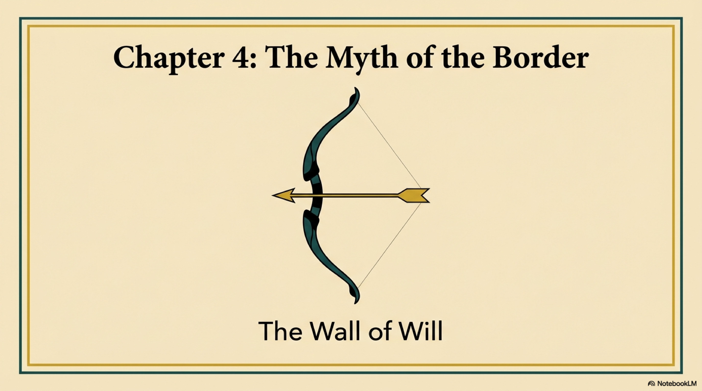
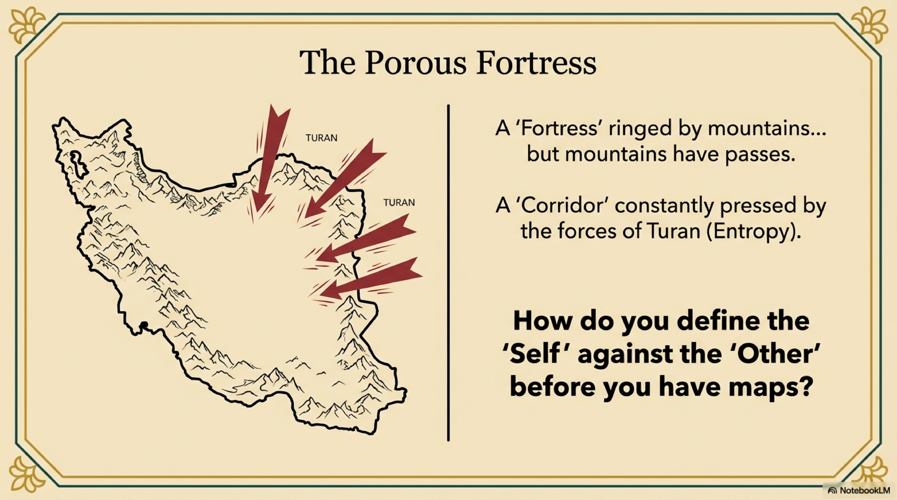
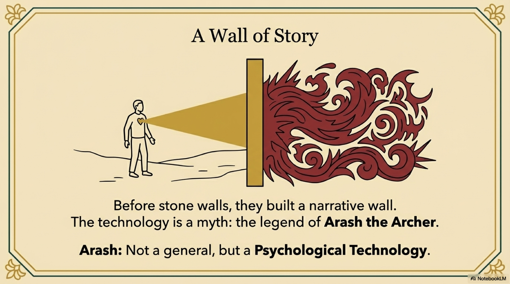

Before Cyrus built the empire, and before Darius built the roads, the Iranians faced a metaphysical problem.
They lived on a plateau that was a "Fortress," yes—ringed by mountains. But mountains have passes. The plateau was also a "Corridor." It was permeable. The forces of Turan—the nomadic, entropic lands of the North and East—were constantly pressing in against the forces of Iran—the settled, coherent lands of the Center.
How do you define a nation before you have mapmakers? How do you establish the "Self" against the "Other"?
You don't use a surveyor. You use a Myth.
Before the Persians built stone walls to define their empire, they built a wall of story. This technology is encoded in the legend of Arash the Archer.

Arash is not a historical general; he is a Psychological Technology. He is the software used to define the sacred space of Iran.
The story takes place in the mythic pre-history. Iran and Turan are at war. The Iranian army is trapped, besieged on the mountain of Damavand. The situation is Maximum Entropy. The nation is about to be erased.
The enemy king offers a cruel wager: Shoot an arrow from this mountain. Wherever it lands, that will be the new border. Whatever is beyond it, we keep.
It is an impossible task. A normal arrow flies a few hundred meters. It cannot save a nation.
Enter Arash.
He is a noble warrior, but he acts like a mystic. He understands the physics of Exchange. He knows that to create a Macro-Coherence—a massive, stable border—he must pay with a massive, localized Entropy—his own life.
He climbs the mountain. He strips off his armor. He stands naked before the rising sun.

He draws the bow. But he does not just pull the string with his muscles. He pours his Potential Energy, his Soul, into the wood and the sinew. He speaks to his own spirit and commands it to leave his body and enter the arrow.
When he releases the bowstring, his body shatters. He ceases to exist.
But the arrow flies.
It flies from dawn until noon. It crosses rivers, plains, and deserts. It lands on the banks of the Oxus River, the Jeyhun, hundreds of kilometers away.
This myth is the foundational definition of the Iranian Boundary.
In the Western tradition, borders are drawn by treaties or geography—Rivers, Mountains. In the Persian Mind, borders are drawn by Sacrifice.
Arash teaches a profound structural principle: A boundary is an energetic field.
A "Safe Space"—a garden, a home, a nation—does not exist by accident. It exists because someone, somewhere, paid the thermodynamic cost to define it. Arash converted his biological existence, Level 2, into a territorial definition, Level 1.
He proved that the integrity of The Roots depends on the willingness to sacrifice the Self.
This myth installed a specific program in the Persian psyche. It taught that the defense of the realm is not about hating the enemy. Arash does not hate the Turanians. It is about the Total Expenditure of Self for the sake of the Whole.
It connects The Roots directly to The Sky.

This is why, thousands of years later, during the Iran-Iraq War, young men would walk into minefields with a strange, calm resolve. They were re-enacting the Arash Protocol. They were using their bodies to define the border, believing that the "Arrow" of their spirit would fly further than the bullet of the enemy.
Arash established the first wall of the Liquid Fortress. It was not a wall of stone. It was a wall of Will.
And once the border was defined, the civilization could begin to build what lay inside: The Ethics, The Architecture, and The Law.
Now, the stage was set for the Kings.